اگر بخواهید اطلاعات خودتان مثل نام، سن و رنگ مورد علاقهتان را در یک برنامه ذخیره کنید، چگونه این اطلاعات را سازماندهی میکنید؟
چگونه میتوانید یک پیام خوشامدگویی به کاربر نمایش دهید و نام او را از کاربر دریافت کنید؟
اگر بخواهید برنامهای بسازید که فقط افراد دارای شرایط سنی خاص اجازه استفاده داشته باشند، چه شرطی باید بنویسید؟
فرض کنید یک سبد خرید دارید که چند محصول در آن وجود دارد، چگونه میتوانید همه محصولات را یکییکی نمایش دهید؟
چگونه میتوانید عددی که کاربر بهصورت رشته وارد کرده است را برای محاسبات ریاضی آماده کنید؟
در پایان از هنرجو انتظار میرود
توضیح دهد که پایتون چیست و چه کاربردهایی دارد و بتواند برنامههای ساده را در محیط IDLE اجرا کند.
قوانین نوشتن کد در پایتون (syntax) را رعایت کند، تورفتگی (indentation) را درست اعمال کند و بتواند چند دستور را در یک برنامه قرار دهد.
رشتهها و اعداد را در پایتون چاپ کند، دادهها را از کاربر دریافت کرده و نوع دادهها را در صورت نیاز تبدیل کند.
متغیر تعریف کند، انواع داده پرکاربرد را بشناسد و طبق قواعد PEP و نامگذاری استاندارد، نام مناسب برای متغیرها انتخاب کند.
از انواع عملگرها (ریاضی، منطقی، مقایسهای) استفاده کند و شرطهای ساده با if ایجاد کند تا تصمیمگیری در برنامه انجام شود.
لیستها را تعریف و پیمایش کند، از حلقههای for و while برای تکرار عملیات استفاده کند، دادهها را در لیستها و رشتهها پیمایش کند و از دستورات break و continue برای کنترل حلقهها بهره ببرد.
استاندارد عملکرد
هنرجو بتواند دادهها را در پایتون تعریف و مدیریت کند، عملیات پایه روی دادهها انجام دهد، از ساختارهای شرطی و حلقهها استفاده کند و دادهها را بهصورت سازمانیافته پردازش کند.
صفحه ۳
آشنایی با پایتون و محیط برنامهنویسی
پایتون روی پلتفرمهای مختلف (ویندوز، مک، لینوکس و...) کار میکند. این زبان برنامهنویسی ساختار دستوری (syntax) سادهای شبیه به زبان انگلیسی دارد و به توسعهدهندگان اجازه میدهد، برنامههایی با تعداد خطوط کمتر نسبت به برخی زبانهای برنامهنویسی دیگر بنویسند. پایتون یک زبان برنامهنویسی مفسری است؛ به این معنا که کدها خطبهخط توسط مفسر ترجمه و اجرا میشوند. این زبان از شیوههای برنامهنویسی رویهای، شیءگرا و تابعی پشتیبانی میکند؛ میتوان برنامههای پایتون را در قالب فایلهایی با پسوند .py در هر ویرایشگر متنی ایجاد کرد و سپس آنها را برای اجرا به مفسر پایتون ارسال نمود.
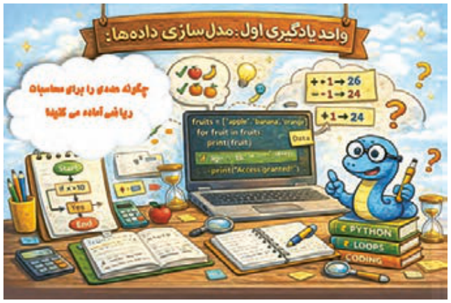
شکل ۱
برای شروع کدنویسی با پایتون (بعد از نصب پایتون آخرین نسخه) با استفاده از محیط IDLE، ابتدا منوی Start را باز کنید، سپس تایپ کنید IDLE یا Python IDLE و روی IDLE (Python 3.x) کلیک کنید. پنجره محیط تعاملی (پنجره IDLE Shell) باز میشود. در این پنجره از منوی file، یک فایل جدید ایجاد کنید. محیط ویرایشگر متنی پایتون باز شده و میتوانید دستورات خود را در آن وارد کنید (شکل 2).
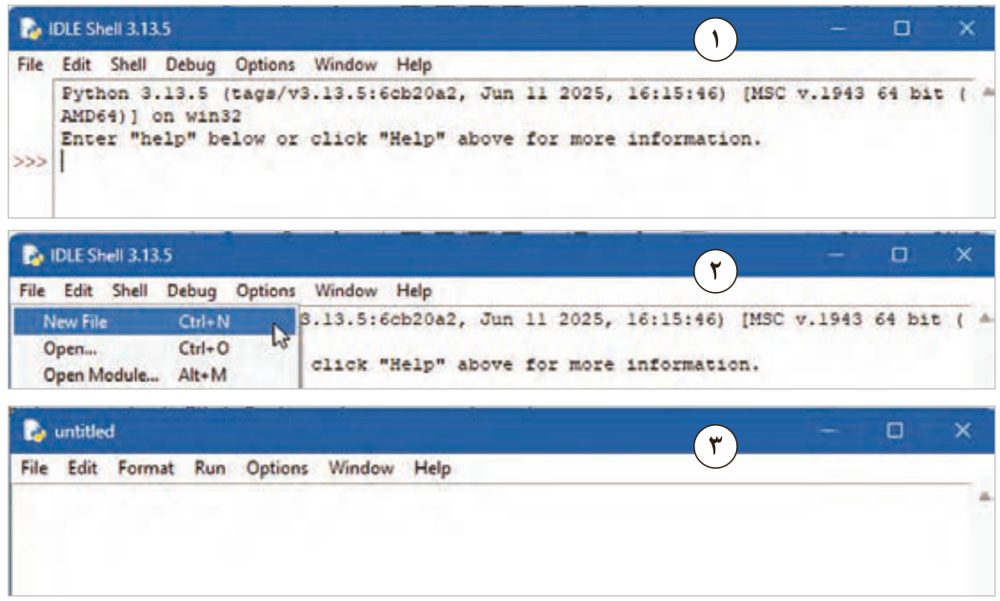
شکل ۲
صفحه ۴
برای شروع کار، کد نوشته در شکل 3 را در ویرایشگر متنی پایتون وارد کنید و فایل را با کمک کلید ترکیبی ctrl + s با نام prog01_hello.py در یکپوشه ذخیره کنید. در مرحله ذخیرهسازی دقت کنید علاوه بر نام فایل باید مسیر ذخیرهسازی فایل نیز با دقت تعیین شوند. توصیه میشود از قبل یک پوشه در یکی از درایوهای D: یا E: با نام PyProg ایجاد و فایلهای خود را در این پوشه ذخیره نمایید.
بهتر است نام فایلها را با یک الگوی دلخواه ذخیره کنید. مثلاً نام فایل اول که کلمه hello را چاپ میکند بهصورت زیر باشد:
prog01_hello.py و فایل دوم که برای کار با متغیر هاست بهصورت زیر باشد.
prog02_variable
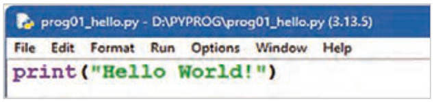
شکل ۳
با استفاده از منوی Run دستور Run Module و یا با زدن کلید F5 اولین برنامه ایجاد شده را اجرا کنید. در برخی از لپتاپها برای اجرای برنامه لازم است کلید ترکیبی Fn+F5 را فشار دهید. (شکل 4)
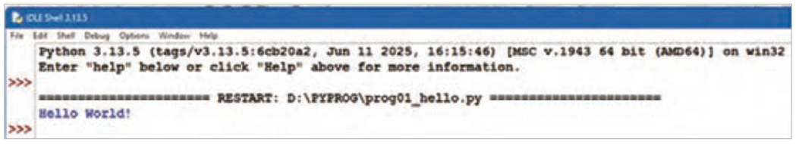
شکل ۴
صفحه ۵
همانطور که در شکل 4 مشاهده میکنید، نتیجۀ اجرای این کد در پنجره IDLE Shell نمایش داده میشود. کدهای ساده را میتوانید در محیط IDLE Shell تایپ کرده و با زدن کلید Enter آن را اجرا نمایید (شکل 5). برای خروج از این محیط exit() و یا Ctrl+d را تایپ کنید و یا به سادگی پنجره را با زدن دکمه Close در بالای آن ببندید.
ساختار دستوری نوشتن کد (syntax) در پایتون
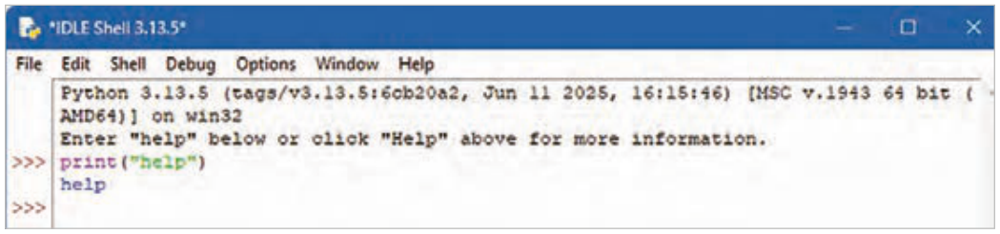
شکل ۵
پایتون با هدف خوانایی بیشتر طراحی شده است و شباهتهایی با زبان انگلیسی دارد. همچنین از مفاهیم ریاضی نیز تأثیر پذیرفته است. برخلاف بسیاری از زبانهای برنامهنویسی که برای پایان هر دستور از نقطهویرگول (;) و پرانتز استفاده میکنند، پایتون از خطوط جدید برای تکمیل و جداسازی دستورات بهره میبرد.
تورفتگی(indent)در پایتون: تورفتگی به فاصلههایی که در ابتدای یک خط کد قرار میگیرند، اشاره دارد. درحالیکه در سایر زبانهای برنامهنویسی، تورفتگی در کد فقط برای خوانایی است، در پایتون تورفتگی بسیار مهم است. پایتون از تورفتگی برای نشاندادن یک بلوک کد استفاده میکند.
اگر از تورفتگی صرفنظر کنید، پایتون به شما خطا میدهد. تعداد فاصلهها بهعنوان یک برنامهنویس به شما بستگی دارد، رایجترین استفاده چهار فاصله است، اما حداقل باید یکی باشد. باید از تعداد مساوی فاصله در یک بلوک کد استفاده کنید، در غیر این صورت پایتون به شما خطا میدهد (شکل 6). در خط5 از کد، بلوک دستور if که بعداً خواهید خواند، باید به اندازه یک Tab یا همان 4 فاصله به جلو برود. همانطور که مشاهده میشود پایتون اجرای برنامه را با یک خطا متوقف کرده است.
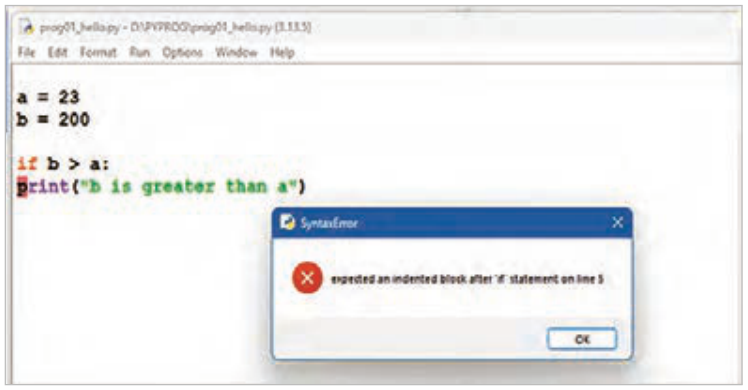
شکل ۶
صفحه ۶
در کد زیر روش صحیح فاصله گذاری را مشاهده میکنید (شکل7).
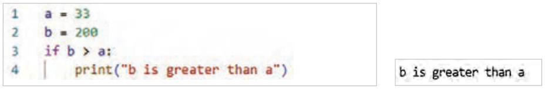
شکل ۷
دستورات (Statements) در پایتون
هر برنامۀ رایانهای از مجموعهای از دستورالعملها تشکیل شده است که باید توسط رایانه اجرا شوند. در زبانهای برنامهنویسی، به این دستورالعملها، دستور یا Statement گفته میشود. بهعنوانمثال، دستور زیر متن «learning python is fun » را روی صفحهنمایش چاپ میکند:
print(“learning python is fun! “)
وجود چندین دستور در برنامه: بیشتر برنامههای پایتون از چندین دستور پشتسرهم تشکیل میشوند. رایانه این دستورات را به همان ترتیب که نوشتهاید یکی پس از دیگری اجرا میکند. در نتیجه، ترتیب نوشتن دستورات در برنامه اهمیت دارد (شکل 8).
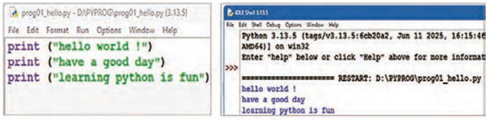
شکل ۸
چاپ رشتههای متنی در پایتون: پیشتر مشاهده شد که برای نمایش متن در خروجی برنامه، از تابع print() استفاده میشود. در زبان پایتون، متن باید داخل گیومه قرار گیرد. برای این منظور میتوان از کوتیشن تکی (' ') یا کوتیشن دوتایی (" ") استفاده کرد (شکل 9).
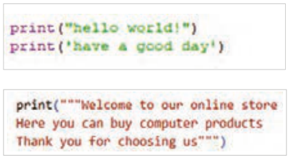
شکل ۹
صفحه ۷
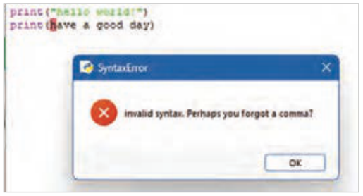
شکل ۱۰
در پایتون از سه کوتیشن Triple Quotes (' ' ') یا (" " ") برای چاپ متنهای چندخطی یا متنی که شامل کوتیشن است، استفاده میشود.
اگر فراموش کنید متن را داخل علامت نقلقول قرار دهید، پایتون خطایی صادر میکند (شکل 10).
اگر میخواهید چندین کلمه را در یک خط چاپ کنید، میتوانید از پارامتر end استفاده کنید (شکل 11).
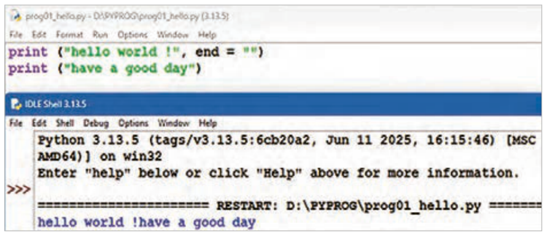
شکل ۱۱
چاپ اعداد در پایتون
میتوانید از تابع print() برای نمایش اعداد صحیح یا اعشاری استفاده کنید (شکل 12).
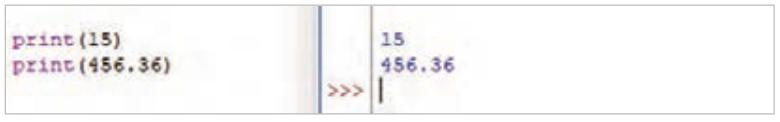
شکل ۱۲
میتوانید عملیات ریاضی را درون آن انجام دهید.
همچنین در دستور print میتوانید اعداد و متن را با هم ترکیب کنید (شکل 13).
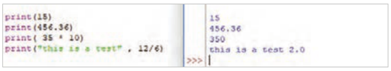
شکل ۱۳
Page 2
Learning unit 1
Have you ever thought about this
If you wanted to store information about yourself, such as your name, age, and favorite color, in a program, how would you organize that information?
How can you show a welcome message to the user and get their name from them?
If you want to build a program that only people of a certain age may use, what condition should you write?
Suppose you have a shopping cart with several products in it. How can you show all the products one by one?
How can you prepare a number that the user typed in as a string for mathematical calculations?
By the end, the student is expected to
Explain what Python is and what it is used for, and be able to run simple programs in the IDLE environment.
Follow the rules for writing code in Python (syntax), apply indentation correctly, and be able to put several statements in one program.
Print strings and numbers in Python, get data from the user, and convert data types when needed.
Define variables, know the common data types, and choose suitable variable names according to the PEP rules and standard naming.
Use the different kinds of operators (arithmetic, logical, comparison) and write simple conditions with if so that the program can make decisions.
Define lists and go through them, use for and while loops to repeat operations, go through the data in lists and strings, and use the break and continue statements to control loops.
Performance standard
The student can define and manage data in Python, perform basic operations on data, use conditional structures and loops, and process data in an organized way.
Page 3
Getting to know Python and the programming environment
Python runs on different platforms (Windows, Mac, Linux, and so on). Its syntax is simple and similar to English, and it lets developers write programs with fewer lines than some other programming languages. Python is an interpreted language: the code is translated and run line by line by the interpreter. It supports procedural, object-oriented, and functional programming. You can create Python programs as files with the .py extension in any text editor and then send them to the Python interpreter to run.
Figure 1
برای شروع کدنویسی با پایتون (بعد از نصب پایتون آخرین نسخه) با استفاده از محیط IDLE، ابتدا منوی Start را باز کنید، سپس تایپ کنید IDLE یا Python IDLE و روی IDLE (Python 3.x) کلیک کنید. پنجره محیط تعاملی (پنجره IDLE Shell) باز میشود. در این پنجره از منوی file، یک فایل جدید ایجاد کنید. محیط ویرایشگر متنی پایتون باز شده و میتوانید دستورات خود را در آن وارد کنید (شکل 2).
Figure 2
Page 4
To begin, type the code shown in Figure 3 into the Python text editor and save the file with the key combination ctrl + s under the name prog01_hello.py in a folder. When saving, be careful to choose not only the file name but also the folder where the file is saved. It is a good idea to create a folder named PyProg in advance on one of the drives D: or E: and save your files in it.
It is better to name your files with a pattern of your choice. For example, the first file, which prints the word hello, can be named like this:
prog01_hello.py and the second file, which is about variables, like this:
prog02_variable
Figure 3
Run your first program with the Run Module command in the Run menu, or by pressing the F5 key. On some laptops you need to press the key combination Fn+F5 to run the program. (Figure 4)
Figure 4
Page 5
As you can see in Figure 4, the result of running this code is shown in the IDLE Shell window. You can type simple code in the IDLE Shell and run it by pressing Enter (Figure 5). To leave this environment, type exit() or Ctrl+d, or simply close the window with the Close button at the top.
The syntax of Python code
Figure 5
Python was designed to be readable and has similarities with English. It is also influenced by mathematics. Unlike many programming languages that use a semicolon (;) and parentheses to end each statement, Python uses new lines to complete and separate statements.
Indentation (indent) in Python: indentation means the spaces at the beginning of a line of code. In other programming languages, indentation is only for readability, but in Python indentation is very important. Python uses indentation to mark a block of code.
If you skip the indentation, Python gives you an error. The number of spaces is up to you as the programmer; the most common choice is four spaces, but there must be at least one. You must use the same number of spaces within a block of code, otherwise Python gives you an error (Figure 6). On line 5 of the code, the block of the if statement, which you will learn about later, must move forward by one Tab, which is 4 spaces. As you can see, Python stopped the program with an error.
Figure 6
Page 6
The code below shows the correct way to indent (Figure 7).
Figure 7
Statements in Python
Every computer program is made of a set of instructions that the computer must carry out. In programming languages these instructions are called statements. For example, the statement below prints the text «learning python is fun» on the screen:
print(“learning python is fun! “)
Several statements in a program: most Python programs are made of several statements one after another. The computer runs these statements one by one, in the order you wrote them. So the order of the statements in a program matters (Figure 8).
Figure 8
Printing text strings in Python: you saw earlier that the print() function is used to show text in the program's output. In Python, text must be put inside quotation marks. You can use single quotes (' ') or double quotes (" ") for this (Figure 9).
Figure 9
Page 7
Figure 10
In Python, triple quotes (' ' ') or (" " ") are used to print text that spans several lines or text that contains quotation marks.
If you forget to put the text inside quotation marks, Python reports an error (Figure 10).
If you want to print several words on one line, you can use the end parameter (Figure 11).
Figure 11
Printing numbers in Python
You can use the print() function to show integers or decimal numbers (Figure 12).
Figure 12
You can do math operations inside it.
In the print statement you can also combine numbers and text (Figure 13).